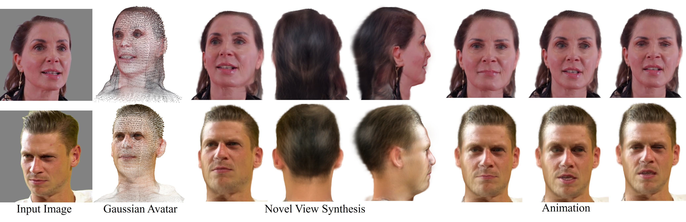
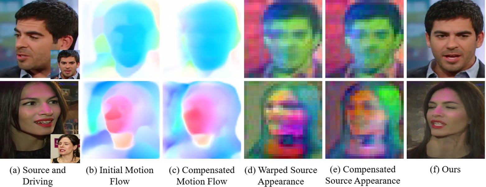
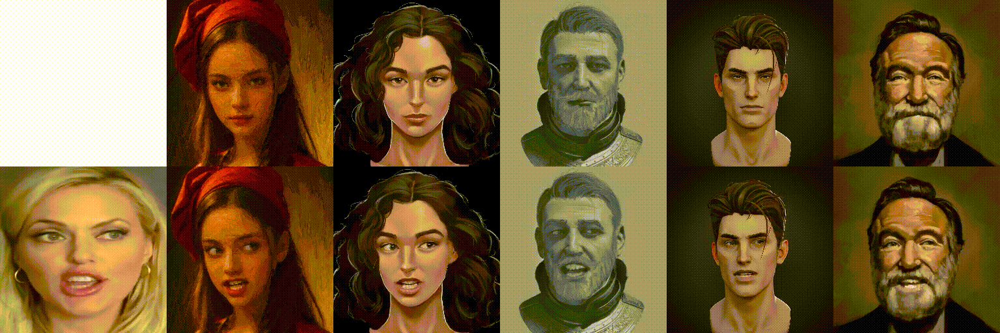

|
Shuling Zhao Hi! I am Shuling Zhao, a Ph.D. student at the Hong Kong University of Science and Technology (HKUST) advised by Prof. Dan Xu. Before that, I received my Bachelor's Degree in Electronic Engineering, Tsinghua University, where I was fortunate to work under Prof. Yong Li, Prof. Guijin Wang and Prof. Guangda Su. My research focuses on human-centric generation, including video and audio-driven digital human generation in 2D or 3D to facilitate teleconferencing, the film industry, and virtual reality applications. |
Research |
|
 |
Generalizable and Animatable 3D Full-Head Gaussian Avatar from a Single Image
Shuling Zhao, Dan Xu arXiv 2026 project page / arXiv Given a single input image, we reconstruct animatable 3D full-head Gaussian avatars in a single forward pass, providing 360° view synthesis and supporting real-time animation. |
|
  |
Synergizing Motion and Appearance: Multi-Scale Compensatory Codebooks for Talking Head Video Generation
Shuling Zhao, Fa-Ting Hong, Xiaoshui Huang, Dan Xu CVPR 2025 project page / paper / arXiv / code We conduct motion and appearance compensation with jointly learned compensatory codebooks for high-quality talking head video generation. |
Teaching |